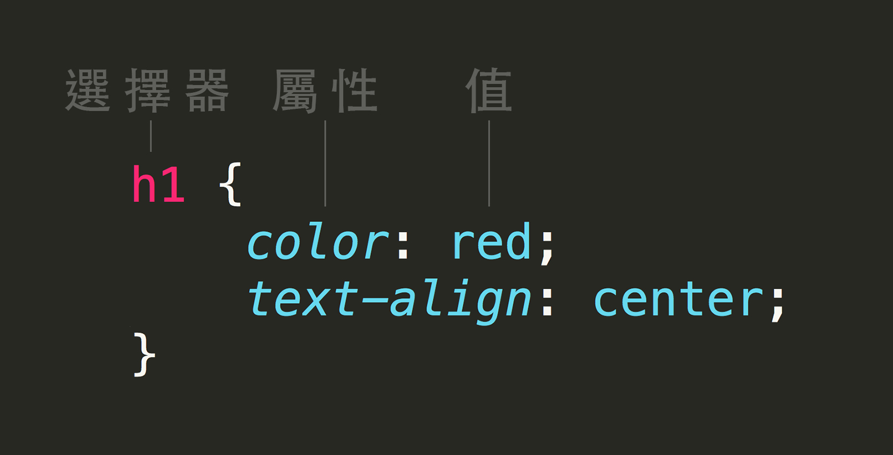

HTML+CSS從頭開始
以 GeneralAssembly 的教材 step by step
Created by ShuyiChan / ProActive前端分享社群
PROJECT 1:
BUILD A PERSONAL WEBSITE

HTML? CSS?
- HTML是網頁的骨架
- CSS 是網頁的衣服
// CSS為赤裸裸的HTML網頁骨架穿上衣服
有穿衣服
完整 HTML+CSS 網頁

脫掉衣服
拿掉 CSS 的網頁，只有骨架內容

丟掉內容
一切的基礎 HTML 文件架構

HTML 基礎架構
網頁標題- DOCTYPE 版本宣告 html5
- html 包住所有程式碼
- head 頁面相關資訊 ＆ CSS碼
- body 所有給使用者看到的網頁內容
HTML 基礎
1. Make the headline and inputs
標籤 (tags)

- 標籤通常是成對的（開始與結束）
- 用來告訴網頁內容的用途與意義
- //單獨標籤： br , hr , img
標籤 的 屬性
- 屬性：標籤中可以調整的選項
- 開始標記可以承載屬性，進一步說明標籤的內容
標籤
HTML標籤展示標籤小重點
- 用對標籤 --了解HTML標籤有哪些，針對內容選用語意相符的標籤
- 有始有終 --開始標籤與結尾標籤
- 單獨標籤： br , hr , img
//撰寫HTML，就是為了正確告訴瀏覽器我想要的效果
part1.html basic code
Anna Dowlin
Hi!I'm Anna Dowlin,a NYC-based marketer.Say hello!
CSS 基礎
2. Style the background and text
CSS三種穿衣法
- 直接穿： 行內樣式
Anna Dowlin
- 整頁穿： 頁面嵌入
- 借來穿： css檔案引入
CSS 如何寫
CSS 排整齊

CSS 選擇器
- 標籤
- 屬性選擇器
Class & ID 選擇器
- Class選取器使用"."---可共用
- ID選取器使用"#" ---是唯一
CSS
.classname{...}
#idname{...}
HTML
...
...
...
//選擇器小遊戲: CSS Diner
part2.css basic code
See the Pen EarGeO by shuyichan (@shuyichan) on CodePen.
圖片與表單 樣式
3. Add a background image and logo
img 標籤

- src 圖片路徑
- alt 用來描述圖片
// 注意：img 沒有結尾標籤
檔案路徑
- 絕對路徑: 完整網址連結，http://...
- 相對路徑: 相對於目前撰寫的檔案所在位置
- 同一層（相同目錄下）就直接寫檔案名稱

- 在下一層資料夾，就要寫資料夾名稱斜線再寫檔名

- 如果是在上一層的目錄中則要加上../

- 同一層（相同目錄下）就直接寫檔案名稱


背景 樣式
background: url("http://dash.ga.co/assets/anna-bg.png");
background-size: cover;
background-position: center;
- background 引入背景圖路徑
- background-size 調整背景尺寸 效果展示
- background-position 調整背景位置
// 去玩更多相關： background-attachment, background-clip, background-repeat
Box Model盒子模型

- 物件大小 ＝ content+padding+border
- 與隔壁的距離 ＝ margin
//資源：學習 CSS 版面配置- 關於 Box Model
PROJECT 2:
BUILD A RESPONSIVE BLOG THEME

網頁header與nav
1. Make the header and navigation HTML
HTML 語意化標籤
//標籤：告訴網頁內容的用途與意義
- header : 一段文件、文章的標題
- nav : 導航的意思
- aside : 主要內容之外的其他內容(側邊欄)
- article : 為頁面中的一個區塊可多個，是獨立的內容
- section : 用於章節等段落的區分，必須有標題
- footer : HTML5頁面的下方，用以顯示相關資訊
HTML 清單
- 無序清單 : ul,li
- 有序清單 : ol,li
- 定義清單 : dl,dt,dd
- 巢狀清單 : 清單中的清單
為header穿衣服
2. Style the header with CSS
CSS Normalize
- 保留原本預設 HTML 標籤的樣式
- 針對不同瀏覽器與各版本間不相容的標籤進行些微調整，呈現一致
display
每個 HTML 元素都有一個預設的 display 值
- block「區塊元素」佔位哥， 舉例：p 、 form
- inline「行內元素」謙虛哥，舉例：span、a
- none 隱藏不佔位
還有延伸： display所有值、 display版面示意
響應式設計＆like按鈕
3. Add responsive design + "like" button
水平居中
-
#main { width: 500px; margin: 0 auto; } - width設定，可以避免該元素從左到右撐滿容器
- 設定左右外邊距為 auto 來使其水平居中
- // 視窗小於500px的話要讓區塊也跟著縮小，
要將width改成max-width
還有延伸： 水平居中版面示意
Media Queries
@media 媒體類型 and (條件)
- 視窗寬度500px以上：採用 CSS1設定
@media screen and (min-width:500px) {CSS1設定} - 視窗寬度在481~768px之間，採用 CSS2設定
@media screen and (min-width: 481px) and (max-width: 768px) {CSS2設定}
Javascript
點擊彈出視窗效果